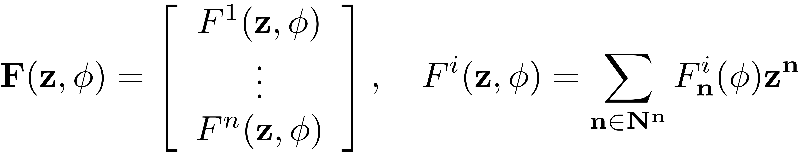
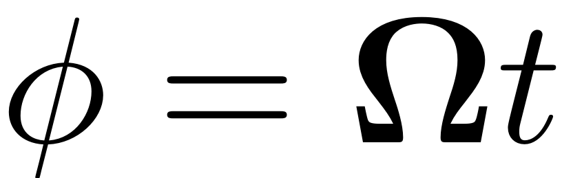
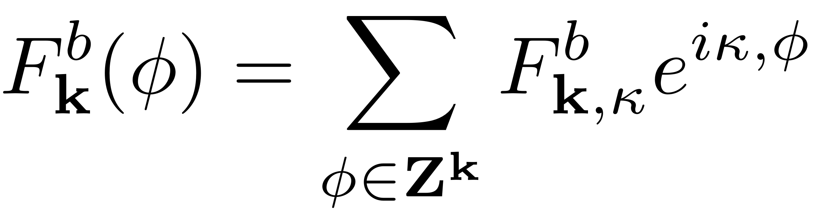

EVALUATE_FEXT
function Fext = evaluate_Fext(obj,t,z)
This function evaluates the external forcing at a given time t for a dynamical system object in the first-order form.
The quasiperiodic first order system force is given as a Taylor expansion on coordinates of the physical coordinates:

The force coefficients are given as a fourier expansion in terms of the phase variable 

switch obj.order case 1 if isempty(obj.Fext) Fext = sparse(obj.N,1); else assert(~isempty(obj.Omega), ' Fext cannot be evaluated as the Omega property of the DS class is empty') % This function assumes periodic forcing nt = size(z,2); Fext = zeros(size(obj.N,nt)); num_kappa = numel(obj.Fext.data); for i = 1:num_kappa % Highest order this Force contributes at order = numel(obj.Fext.data(i).F_n_k)-1; % zeroth order F0 = obj.Fext.data(i).F_n_k(1); if ~isempty(F0) && ~isempty(F0.coeffs) Fext = Fext + real( F0.coeffs * exp(1i * obj.Fext.data(i).kappa * obj.Omega .* t)); end for j = 1:order % array starting at 0 %Contribution to order j Forcing with harmonic kappa_i Fij = obj.Fext.data(i).F_n_k(j+1); Fext = Fext + real(expand_multiindex(Fij,z) .* ... exp(1i * obj.Fext.data(i).kappa * obj.Omega .* t)); end end if obj.order==2 assert(size(obj.Omega,2) == size(obj.fext.epsilon,2),'epsilon and Omega must have same number of columns'); else assert(size(obj.Omega,2) == size(obj.Fext.epsilon,2),'epsilon and Omega must have same number of columns'); end Fext = Fext * diag(obj.Fext.epsilon); if obj.Options.BaseExcitation Fext = Fext*diag((obj.Omega).^2); end end case 2 x = z(1:obj.n,:); xd = z(obj.n+1:obj.N,:); nt = size(x,2); Fext = [obj.compute_fext(t,x,xd); sparse(obj.n,nt)]; end